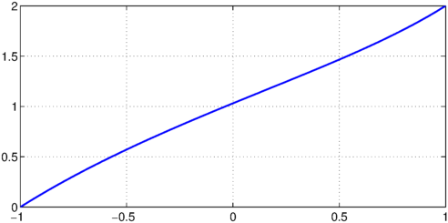
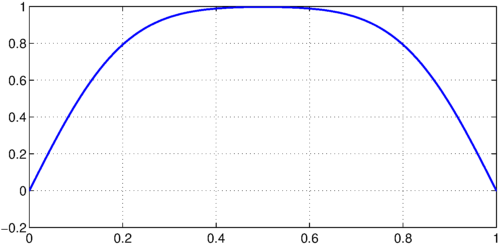
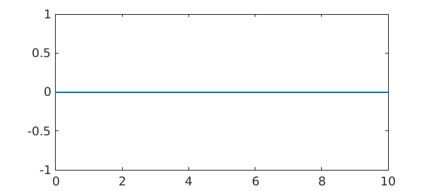
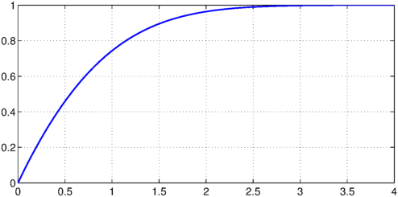
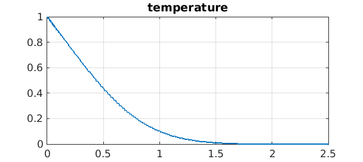
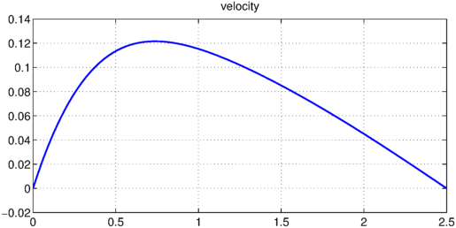

An interesting new paper by Binous, Shaikh, and Bellagi explores various problems that can be solved by Chebyshev spectral methods [1]. Here we solve a number of these problems with Chebfun, but not all of them; perhaps others could extend the discussion? The equation numbers are from [1], and we abbreviate the authors by ``BSB''.
1. Split boundary value problem
The first problem BSB address is (3),
$$ uu'-u'' = 1, \quad u(-1) = 0,~ u(1) = 2 . $$
BSB solve this by setting up a nonlinear system of equations based on Chebyshev collocation, then solving the system by FindRoot in Mathematica or fsolve in MATLAB. We can solve it in Chebfun by
N = chebop(-1,1); N.op = @(x,u) u.*diff(u) - diff(u,2); N.lbc = 0; N.rbc = 2; u = N\1;
A plot agrees nicely with Figure 1 of [1],
plot(u), ylim([0 2]), grid on

and the values at $x=0$ and $x=1/\sqrt 2$ agree with BSB Table 1,
format long u([0 1/sqrt(2)])
ans = 1.030986977102136 1.663419631612752
2. Diffusion problem
Next BSB consider the PDE (5)
$$ u_t = u_{yy} , \quad u(t,0)=u(t,1) = 0, ~u(0,x) = 1 , $$
and they report the solution at time $t=0.0126$ based on NDSolve in Mathematica or ode15s in MATLAB. We can do this as follows (type help chebop/expm for details):
L = chebop(0,1);
L.op = @(y,u) diff(u,2);
L.bc = 'dirichlet';
u0 = chebfun('1',[0 1]);
t = 0.0126;
u1 = expm(L,t,u0);
A plot agrees nicely with BSB Figure 2,
plot(u1), grid on

and the value at $y=0.5$ matches their Table 2:
u1(0.5)
ans = 0.996731280145514
3. Arnold problem
The third problem addressed by BSB is (8)
$$ c_t = Ac_{zz} + B c_{zz} , \quad c(t,0)=C, ~~c(t,\infty) = 0, ~~c(0,z) = 0 , $$
where $A$, $B$ and $C$ are constants, describing evaporation of a liquid. It seems that BSB don't list the values of the constants, however, so I will leave this one for now.
4. Unsteady convection-diffusion problem
The next problem is (11)
$$ c_t = 0.49 Dc_{xx} - 2.5 c_x , \quad c(t,0)=1, ~~c(t,\infty) = 0, ~~c(0,z) = 0 , $$
with $D = 0.49$. The following formulation doesn't work; more thought needed.
dom = [0,10];
L = chebop(dom);
L.op = @(x,c) 0.49*diff(c,2) - 2.5*diff(c);
L.lbc = 1; L.rbc = 0;
c0 = chebfun('0',dom);
t = 1.33;
u1 = expm(L,t,c0);
plot(u1)

5. Falkner-Skan equation
Next we look at
$$ f''' + ff'' + (\pi/4)(1-(f')^2) = 0, \quad f(0) = f'(0) = 0, ~~ f'(\infty) = 1 . $$
BSB solve this on $[0,4]$ and then plot the derivative,
dom = [0 4]; N = chebop(dom); N.op = @(x,f) diff(f,3) + f.*diff(f,2) + (pi/4)*(1-diff(f).^2); N.lbc = @(f) [f; diff(f)]; N.rbc = @(f) diff(f)-1; f = N\0; plot(diff(f)), grid on

6. Non-Newtonian Carreau fluid
BSB now consider a non-Newtonian fluids problem with a shear-dependent viscosity mu,
$$ mu(g) = 0.00204 (1+ 0.04 g^2)^{-1/4} $$
where $g = \dot\gamma$ is the shear rate. I am not sure what they do with this formula.
7. Convection past an isothermal plate
This problem involves a couples system of two ODEs involving the stream function $F(y)$ and the temperature $T(y)$:
$$ F''' + 3FF' - 2(F')^2 + T = 0, \quad T'' + 30FT' = 0, $$
with five boundary conditions,
$$ F(0) = F'(0) = 0, ~~ F'(\infty) = 0, ~~ T(0) = 1, ~~ T(\infty) = 0. $$
They approximate $[0,\infty]$ by $[0,5]$, but my attempt with this interval fails, so I will shorten it to $[0,2.5]$:
dom = [0 2.5]; N = chebop(dom); N.op = @(y,F,T) [diff(F,3)+3*F.*diff(F)-2*diff(F).^2+T; diff(T,2)+30*F.*diff(T)]; N.lbc = @(F,T) [F; diff(F); T-1]; N.rbc = @(F,T) [diff(F); T]; U = N\0;
BSB plot the temperature,
T = U{2}; plot(T), grid on, title temperature

and the velocity, which is $F'$,
F = U{1}; plot(diff(F)), grid on, title velocity

Reference
- H. Binous, A. A. Shaikh, and A. Bellagi, ``Chebyshev orthogonal collocation technique to solve transport phenomena problems with Matlab and Mathematica", Computer Applications in Engineering Education, 2014, pp. 1-10.